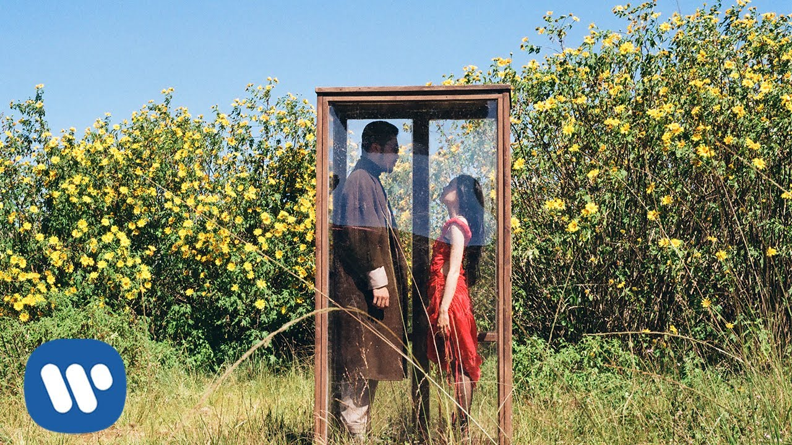
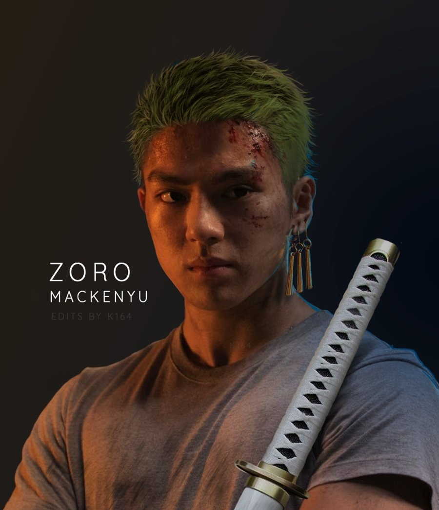
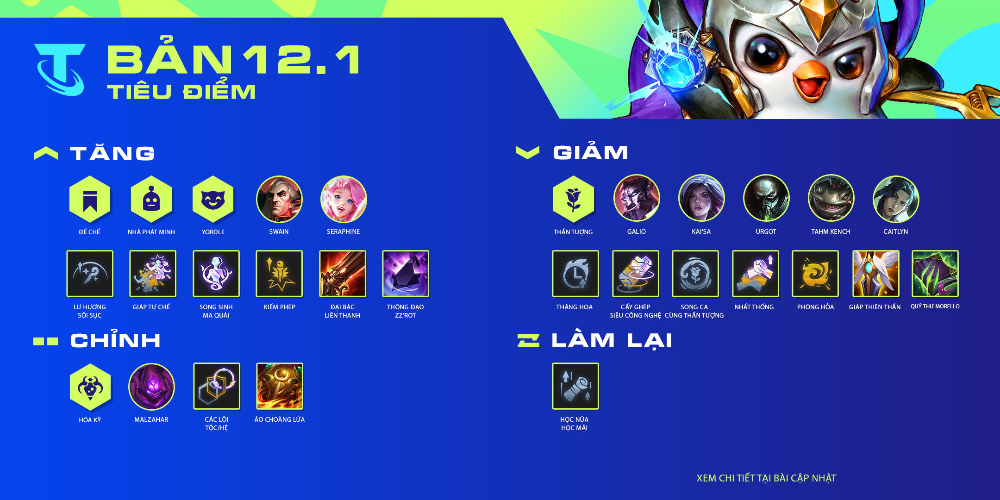

Bước qua mùa cô đơn/ Vũ.
Thứ ba, 11/1/2022, 08:00 (GMT+7)
Tối ngày 10 tháng 12 năm 2020, Vũ. chính thức tung ra MV mới mang tên "Bước qua mùa cô đơn", đánh dấu sự trở lại sau nửa năm vắng bóng.
Tổng hợp thông tin mùa giải 2022
Thứ ba, 11/1/2022, 08:30 (GMT+7)

LReav3 sẽ đem đến cho bạn những thông tin về các tướng mới và dự án Cập Nhật Tướng trong 2022—và dĩ nhiên, Zeri , Xạ Thủ chủ lực với sức mạnh Điện Năng cực chất.
Dàn cast "One Piece" Live-Action hé lộ
Thứ ba, 11/1/2022, 09:00 (GMT+7)
Netflix Festival Japan 2021 là sự kiện đang Netflix tổ chức vào ngày 9/10/2021. Netflix đã hé lộ thêm về dàn cast chính thức của One Piece bản Live-action.
Hoà chung niềm vui LỄ HỘI MÙA XUÂN
Thứ ba, 11/1/2022, 09:30 (GMT+7)

Những ngày đầu xuân mới, Thành Phố Vũ Hội bỗng ngập tràn niềm vui tươi phấn khởi của thiên nhiên, của bầu trời xanh trong và cỏ cây hoa lá. Hãy cùng hoà chung niềm vui ấy với Audition nhé!
Bản cập nhật đấu trường chân lý 12.1
Thứ ba, 11/1/2022, 10:00 (GMT+7)
Cùng với những thay đổi lớn về các Lõi Nâng Cấp trong Phiên Bản 11.24, sẽ có thêm một vài cải thiện chất lượng. Bằng cách tăng chất lượng của các lõi liên quan đến tộc hệ bằng cách kết hợp chúng với tướng, vàng, hoặc ấn miễn phí.
One Piece chạm mốc 1000 tập
Thứ ba, 11/1/2022, 10:30 (GMT+7)

Hãy cùng nhau nhìn lại hành trình đầy khó khăn của Luffy và những người bạn anh đi cùng con tàu có tên "Sunny" trên con đường chạm đến ước mơ làm Vua hải tặc đầy thử thách.